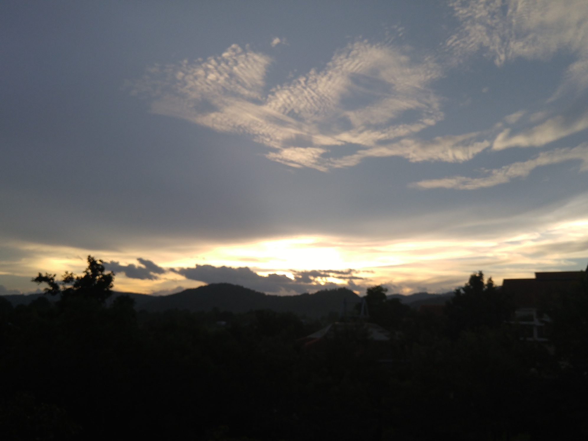

มาหาเชียงใหม่ที่บ้านเพื่อน

วันนี้ได้กลับมาหาเชียงใหม่อีกครั้งหลังจากหายหน้ากันไปนาน เพราะความห่างกันทำให้เมื่อเจออีกครั้งเป็นความรู้สึกสดชื่นอย่างไม่คุ้นเคย
นครแห่งนี้ยินดีต้อนรับเราด้วยอากาศร้อนเหนียวเหนอะก่อน ถัดมาด้วยฝนโปรยฉ่ำ ยามเย็นถูกส่งมาลาด้วยแสงสีทองพร้อมลมพัดอ่อนๆ
การเดินทางกลับจากที่ทำงานที่ถูกโรยด้วยกลิ่นดอกไม้พร้อมไอเย็นของต้นไม้ข้างทางช่วยให้ความเหนื่อยล้าถูกบรรเทาไปได้
เที่ยวนี้ได้มีโอกาสมาพักบ้านเพื่อน บ้านไม้หลังนี้บ่งบอกความเป็นเจ้าของได้เป็นอย่างดี ไม่ว่าจะเป็นความละเอียดที่ใส่ใจในผนังทุกด้าน ความซุกซนขี้เล่นที่ซ่อนอยู่ตามบันไดหรือบานหน้าต่าง ความดื้อรั้นของเจ้าตัวทำให้เสาบ้านหายไปหนึ่งต้น ความพยายามใส่ความเป็นจีนเล็กน้อยตามลักษณะนิสัยของไอ้ตี๋หนุ่มคนนี้ ความสงบในความมืดสลัวทำให้นึกถึงการร่ายบ่นของจุนอิชิโร่ ทานิซากิในเยิรเงาสลัวขึ้นมาทันที เรียกได้ว่าถ้าได้มาพักบ้านหลังนี้ก็ต้องนึกถึงนิสัยไอ้เพื่อนคนนี้ ว่าอย่างนี้แหละถึงจะเรียกว่าบ้านมัน ราวกับว่าถ้าปกติหมั่นไส้มันอยู่แล้ว มาพักบ้านนี้ก็ต้องพลอยหมั่นไส้ตัวบ้านไปด้วยแน่
ถึงอย่างไรบ้านใหม่ที่เจ้าตัวตั้งใจทำนี้ก็มีความดีอย่างที่ไม่ชมไม่ได้ ความรู้สึกที่นึกออกคือ ราวกับเอารีสอร์ทเงียบสงบมารวมกับสวนสนุก ให้นึกภาพถึงการเดินออกไปนั่งในสวนกลางดึกสงัด พอกำลังจะหลับตานั่งสมาธิกลับเจอหมีบราวน์กำลังวิ่งจับผีเสื้อวิ่งผ่านไปซะอย่างนั้น
กลิ่นของไม้ทำให้นึกถึงบ้านย่าที่ไม่ได้ไปนานมาแล้วขึ้นมารางเลือน
...
มีสิ่งที่ไม่ได้ทำนานก็คือการฝึกหัดวาดรูประบายสีอย่างที่ตั้งใจเอาไว้ หวังว่ามาเชียงใหม่คราวนี้หากมีเวลาคงจะได้เอาอุปกรณ์ออกมาปัดฝุ่นเสียบ้าง ให้สมกับบรรยากาศที่ออดอ้อนเสียเหลือเกิน